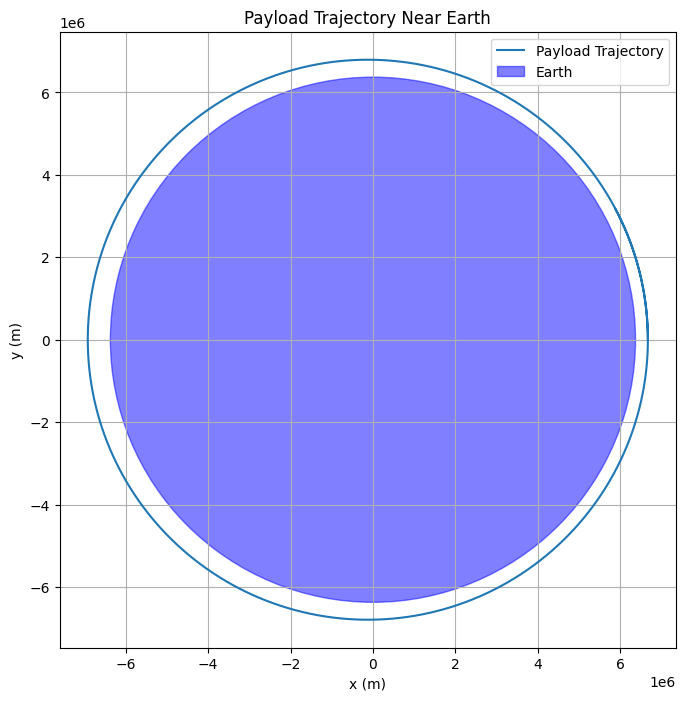

Absolutely! Here's a complete breakdown of Problem 3: Trajectories of a Freely Released Payload Near Earth, including the theory, physics, Python implementation, and visualization.
🌍 Problem 3: Trajectories of a Freely Released Payload Near Earth
🎯 Motivation
Understanding the motion of a payload released near Earth is essential for: - Satellite deployment - Orbital insertion - Escape missions - Reentry calculations
This problem explores how gravitational forces and initial velocities shape the trajectory of an object released from a spacecraft.
1️⃣ Theoretical Foundation
We analyze the motion of a payload using Newton's Law of Universal Gravitation:
Where: - \( F \) = Gravitational force - \( G \) = Gravitational constant \( (6.674 \times 10^{-11} \, \text{Nm}^2/\text{kg}^2) \) - \( M \) = Mass of Earth \( (5.972 \times 10^{24} \, \text{kg}) \) - \( m \) = Mass of payload (cancels in equations of motion) - \( r \) = Distance from Earth's center
The corresponding acceleration of the payload is:
This results in Keplerian orbits, depending on the total mechanical energy: - Elliptical: Bound orbit (\(E < 0\)) - Parabolic: Escape trajectory at threshold energy (\(E = 0\)) - Hyperbolic: Unbound escape trajectory (\(E > 0\))
2️⃣ Numerical Simulation
We simulate the trajectory using Newton’s second law and integrate using a method like RK4 or scipy.integrate.solve_ivp.
🧮 Equations of Motion
3️⃣ Python Implementation (With Visualization)

4️⃣ Analysis of Trajectories
🌀 Types of Orbits:
- Elliptical (e < 1): Sub-orbital or orbital if velocity is below escape speed
- Parabolic (e = 1): Escape trajectory, \( v = v_{\text{escape}} = \sqrt{2GM/r} \)
- Hyperbolic (e > 1): Velocity exceeds escape speed
🔁 Try these initial velocities:
v0 = 7800 m/s→ Circular/elliptical orbitv0 = 11186 m/s→ Parabolic escapev0 = 12000 m/s→ Hyperbolic escape
5️⃣ Real-World Applications
- Spacecraft orbit insertion: Determine the correct velocity to maintain orbit
- Satellite reentry: Reduce speed below orbital threshold
- Escape missions: Launch probes beyond Earth’s gravitational pull
- Orbital transfers: Use these principles in Hohmann transfers or interplanetary missions
6️⃣ Deliverables Summary
| Deliverable | Description |
|---|---|
| ✅ Markdown Explanation | Included theory, equations, physical insights |
| ✅ Python Script | Simulates payload trajectory with gravity |
| ✅ Graphs | Visualizes payload path around Earth |
| ✅ Applications & Analysis | Connects math to mission planning, reentry, escape |
🧠 Extensions (Optional)
- Add atmospheric drag for low altitude motion
- Simulate multi-body interactions (e.g., Moon's gravity)
- Include thrust for trajectory correction